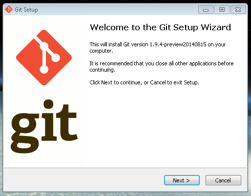
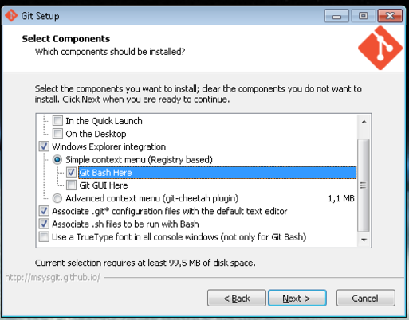
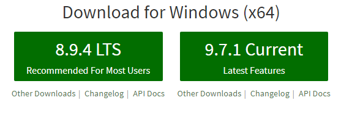
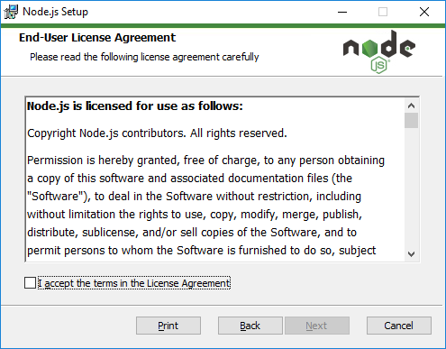

O git é um sistema de controle de versão que registra as alterações em um ou vários arquivos guardando o status destes ao longo do tempo para que, desta forma, você possa recuperar versões específicas posteriormente. A diferença entre o git e outros VCS é a forma como o git pensa em seus dados, o git basicamente tira uma "foto" de todos os seus arquivos e armazena uma referência àquele snapshot.
No site https://git-scm.com/ você pode baixar o instalador caso esteja utilzando SO windows. No linux basta executar o comando apt-get install git.
Através deste link msysgit.github.com você baixa o software e dá duplo click em cima do executável para começar a instalação.
Aqui é simples: Next, Next até chegar a essa tela:

Deixe marcado a opção Git Bash Here.
Com essa opção você poderá abrir o terminal do Git a partir de qualquer pasta em que estiver com o botão direito do mouse.
Ai vem o Next, Next de novo até essa tela:
Selecione a segunda opção para que não existam conflitos entre as quebras de linha que o Windows coloca com as que os Sistemas Unix usam.
Next, Next e podemos então configurar.
Informe seus dados ao git!
1 git config --global user.name "Nome"
1 git config --global user.email "email@email.com"
Pronto!
Existem outras configurações maneiras e você pode
encontrá-las aqui.
O Github é um serviço web que oferece diversas funcionalidades extras aplicadas ao git. Resumindo,
você poderá usar gratuitamente o github para hospedar seus projetos pessoais. Além disso,
quase todos os projetos/frameworks/bibliotecas sobre desenvolvimento open source estão no github,
e você pode acompanhá-los através de novas versões, contribuir informando bugs ou até mesmo enviando código e correções.
Se você é desenvolvedor e ainda não tem github, você está atrasado e essa é a hora de correr atrás do prejuízo.
O git também é uma rede social voltada para programadores, você posta seus códigos e poderá receber contribuições de outros
programadores. O serviço do github é gratuito embora existe a opção de planos pagos.
O cadastro é simples e rápido, basta acessa o site e informar um nome de usuário, e-mail e senha.
Node.js é um interpretador de código JavaScript com o código aberto, focado em migrar o Javascript do lado do cliente para servidores.
Seu objetivo é ajudar programadores na criação de aplicações de alta escalabilidade (como um servidor web), com códigos capazes de
manipular dezenas de milhares de conexões simultâneas, numa única máquina física.
O Node.js é baseado no interpretador V8 JavaScript Engine (interpretador de JavaScript open source implementado pelo Google em C++ e utilizado pelo Chrome).
Foi criado por Ryan Dahl em 2009, e seu desenvolvimento é mantido pela fundação Node.js em parceria com a Linux Foundation.
Acesse a página do node.js e faça o download da versão mais atualizada.
Após feito o download da instalação do Node, abra o aplicativo e aceite os termos de uso.

Na instalação de pacotes, garanta que todos estejam selecionados, principalmente o node.js runtime e o NPM.
Depois prossiga com a instalação até o fim com “Next, Next, Finish”.
Observe que na variável PATH de ambiente do windows, foi incluído o caminho do Node.js que você escolheu.
O ideal é que o caminho do Node.js seja o primeiro da lista.
Após todos estes passos, o ambiente de desenvolvimento do Node.js estará instalado no seu Windows,
para confirmar se tudo esta funcionado, abra o Prompt de Comando do Windows e digite: “node –version”.
Veja a informação da versão do seu Node.js: